To honour and continue the legacy
of Dr. Krishnaswamy Kasturirangan by inspiring future generations
through initiatives that promote scientific excellence and action that
is ethical, humane and sustainable
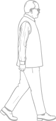
The Dr Kasturirangan Trust was constituted to honour and continue
the lifelong service of Dr. K. Kasturirangan. His contributions
across space, science and technology, education, and the environment
helped shape modern India.
He also leaves an Indian ethos rooted in inner quest, discovery pursued with
integrity, committed hard work, and compassion for every human being.
He held throughout to rigorous inquiry, wide consultation,
problem solving, and humane judgement — the habits of a systems
thinker who saw institutions and ideas as interconnected,
anticipated what the country would need, and defined the actions
required to realise it. That approach brought knowledge, research,
education, and governance together in service of a larger public good.
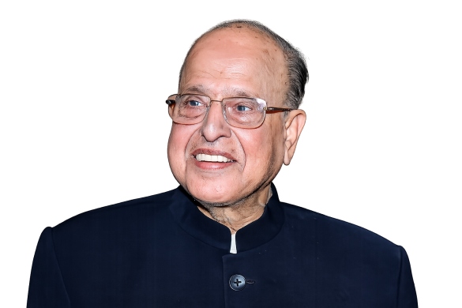
Go through this timeline to learn more about his life.
The Trust is guided by the vision, values and philosophy of Dr K. Kasturirangan – uniting curiosity with understanding, and scientific rigour with ethical and social responsibility, while envisioning future systems grounded in human values.
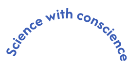
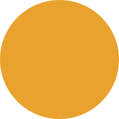
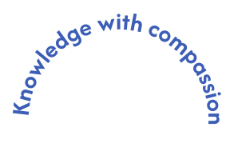
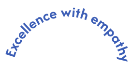
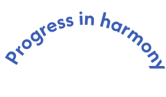
Creating Future Leaders
Fellowships, scholarships, and research grants
Policy & Impact
Programmes to improve institutional effectiveness and policymaking
Advancing Knowledge
Conferences, books, and outreach events
Global Collaboration
Liaisons with like-minded institutions
Futures Institute
An institution that advances future thinking, research, and practical solutions for India’s long-term development
The Trust is a living institution of people active in diverse domains that shaped K. Kasturirangan’s remarkable life.
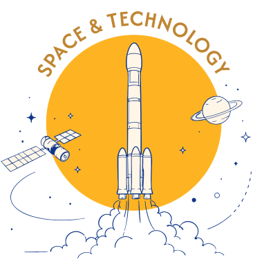
Satellite applications and space technology for the benefit of humankind
Revolutionising learning systems and research frameworks
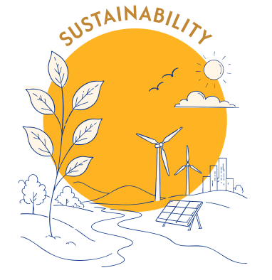
Environmental consciousness and urban/rural transformation
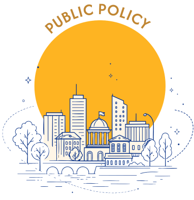
Cultivating leadership and ethical governance
Public Charitable Nature: A non-profit,
non-political, and irrevocable organisation established for the public at large
Distinguished Leadership: Governed by a Board of
Trustees, Advisory Board and Executive Council representing experts
and eminent persons from diverse backgrounds in science, academia, and civil service
Strict Ethics and Compliance: Unwavering commitment
to integrity, ethical conduct, and compliance with human values,
societal expectations, and national and international laws and standards
Applicable laws include the Indian Trusts Act
The Trust will partner with government institutions, private
enterprises, and non-profit organisations in India and around the
world that share its commitment to scientific excellence and the
betterment of humanity.
Trustees@drkasturirangantrust.org
Registered Office:
Alder 1002, Godrej Woodsman Estate, Hebbal,
Bengaluru – 560045
Sanjay Rangan | sanjay.rangan@drkasturirangantrust.org
Mukund Rao | mukund.rao@drkasturirangantrust.org
Anurag Behar | anurag.behar@drkasturirangantrust.org